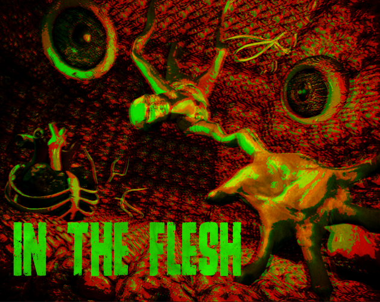
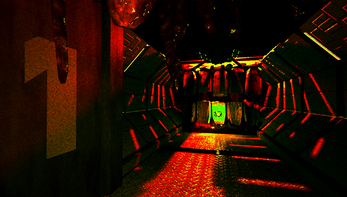
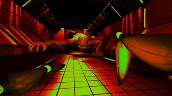
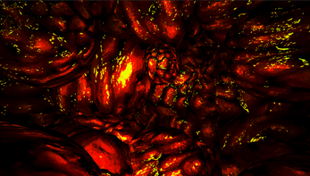
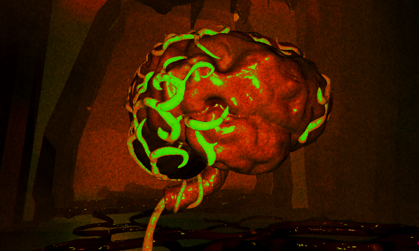
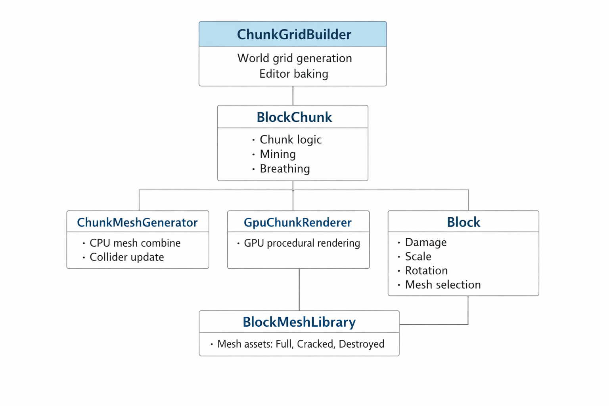
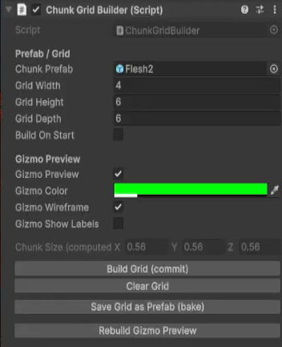
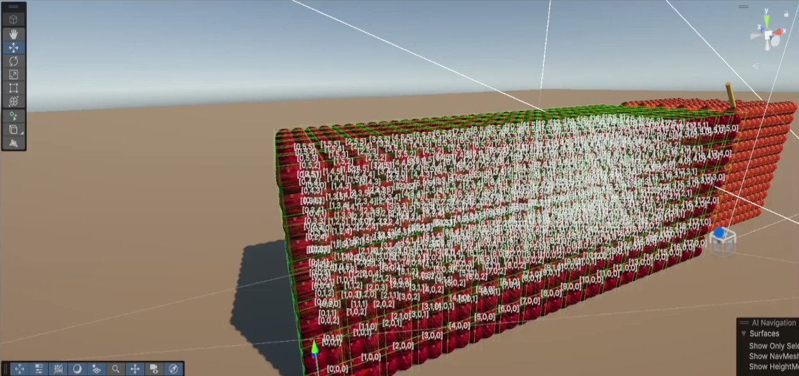

- Role
- Technical Designer
- Engine
- Unity
- Platform
- PC
- Project type
- Summer project
- Team size
- 8
- Duration
- 3 months
- Build:
- Itch.io
- Source:
- GitHub
Project overview
A flesh-eating parasite has crawled aboard an abandoned spaceship, completely overtaken by THE FLESH. Tunnel through flesh to uncover organs hidden deep inside the ship. Each organ can help you grow, but eat them carelessly and THE CELL will FEEL it. The more organs you consume, the larger your jaws become, letting you tear through tougher layers of flesh and access new areas.
My contributions
Engineered a procedural generation system to create a dynamic, destructible flesh substance that accurately updates and deforms as it is consumed by the player.
Developed omnidirectional player controls to allow seamless, 360-degree traversal and navigation through dense, organic environments.
Designed and programmed core gathering mechanics, including a drill harvesting system and a timed-slider active minigame utilized for upgrading extraction efficiency.
Built a custom level editor tool that automatically populates confined map spaces with dynamically scaled terrain assets based on room dimensions.
Technical Highlights
Design & development
Goal: Procedural Destructible Environments
The objective was to engineer a fully destructible, voxel-based terrain system capable of handling thousands of organic blocks with real-time scaling, rotation, dynamic damage tracking, and idle breathing effects without sacrificing frame rate.
Solution: Procedural Destructible Environments
To resolve performance bottlenecks, the architecture splits environmental processing into a hybrid pipeline where heavy visual computational work is offloaded entirely to custom GPU computing while the CPU handles structural logic at a constrained frequency.
GPU-Driven Indirect Instancing: A custom GPUChunkRenderer uses an append-structured ComputeShader to dynamically sort and compile model matrices into specialized sub-buffers based on block damage states. These states include Full, Cracked, and Almost Destroyed assets. Visually displaying thousands of voxels via Graphics.DrawMeshInstancedIndirect completely bypasses CPU rendering overhead.
Deferred CPU Physics Optimization: Rather than rebuilding complex physics colliders every single time a block receives damage, the CPU-bound ChunkMeshGenerator utilizes a dirty flag system inside LateUpdate. Collider mesh combinations run on an explicit refresh interval. This design choice prevents frame-stutter when a drill tool impacts multiple blocks across the same frame.
State & Memory Management: Each individual voxel functions as a lightweight state engine handling localized damage interpolation and scaling properties. The memory footprint is kept minimal by pulling static geometric configurations from a shared BlockMeshLibrary. Additionally, a dedicated ChunkAutoDestroyer unloads and registers completely mined chunk coordinates to prevent memory leakage.





Goal: Modular Level Layout Iteration
The objective was to build a robust, designer-facing utility that streamlines large-scale level configuration by allowing development teams to instantly assemble, manipulate, and clear full multi-dimensional layouts within the editor without encountering runtime performance hits or asset optimization overhead.
Solution: Custom Chunk Grid Baker Tool
Automated Asset Deduplication Engine: Implemented an integrated ComputeMeshHash routine using an MD5 hashing algorithm to scan and convert vertex, index, normal, and UV buffer data arrays into unique identifiers during asset generation. If a generated chunk mesh structure perfectly matches another elsewhere in the grid, the tool automatically reuses the existing asset instead of writing a redundant file.
Persistent Mesh Baking Workflow: Designed an intelligent asset creation pipeline that systematically iterates over three-dimensional layout coordinate points, instantiates layout building blocks, forces structural baking, and cleanly saves persistent geometry into separate unique asset paths. This pipeline compiles the final layout directly into a single optimized nested prefab file.
Responsive Layout Previews: Integrated real-time gizmo manipulation logic and distinct editor button handlers that allow team members to seamlessly clear boundaries, commit structural components, or trigger layout visual rebuild checks within a few mouse clicks.


